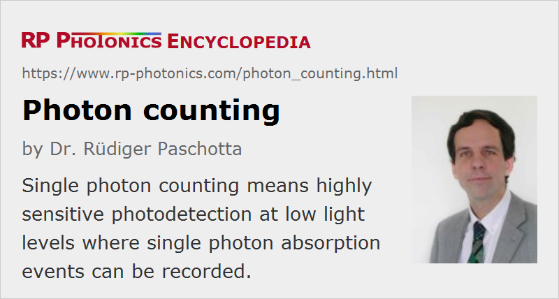

Photon Counting
Definition: photodetection at low light levels where single photon absorption events are counted
German: Photonenzählung, Einzelphotonendetektion
Categories: photonic devices, light detection and characterization, optoelectronics, quantum optics
How to cite the article; suggest additional literature
Author: Dr. Rüdiger Paschotta
Some kinds of photodetectors are so sensitive that they allow the detection of single photons. It is then possible to register single photon absorption events, rather than measuring an optical intensity or power. It is also possible to register coincidences between two or more detectors; this is very important for many experiments in quantum optics.
Photon counters often contain electronics which produce a digital output pulse (e.g. with TTL format) for each registered photon, rather than an analog signal with fluctuations. For that, they may use some kind of electronic discriminator, which e.g. produces an output pulse each time when a certain threshold is exceeded.
Important Properties of Photon Counters
Photon counting detectors have characteristic properties which are somewhat different from those of other photodetectors. The most important ones are the following:
- The dark count rate is the average rate of registered counts without any incident light. This determines the minimum count rate at which the signal is dominantly caused by real photons. The false detection events are mostly of thermal origin and can therefore be strongly suppressed by using a cooled type of detector. To some extent, it also helps to reduce the active area.
- The dead time is some length of time after the detection of a photon where no further detection is possible. That limits the maximum count rate.
- The quantum efficiency is the fraction of incident photons which can be registered. Detection with a small quantum efficiency (i.e., missing out many photons) introduces noise which can be very disturbing particularly for the detection at the quantum noise level (see also: shot noise).
- The timing jitter as a qualitative term is the uncertainty of the timing of the registered photon events. It is usually quantified with an r.m.s. (root-mean-square) value.
- Particularly for photomultipliers, there is also some fixed time delay between photon absorption and the output of an electrical pulse; this results from the transit time of electrons, which can be tens of nanoseconds.
Photodetectors for Photon Counting
The classical way of photon detection is to use a photomultiplier tube. Particularly with a cooled photocathode, such a device can have a very low dark count rate. The quantum efficiency can reach several tens of percent in the visible spectral region, whereas devices for infrared light achieve quantum efficiencies of at most a few percent.
Photon counting performance can also be implemented for imaging devices by using image intensifiers, which are usually based on a microchannel plate behind a photocathode.
Avalanche photodiodes (APDs) can be operated in the Geiger mode for photon counting. They are then called single photon avalanche diodes (SPADs). Here, the applied reverse voltage is slightly above the avalanche breakdown voltage. An electron can then be triggered by a single photon, and must be stopped by lowering the voltage for a short time interval, which determines the dead time. Depending on the wavelength, the quantum efficiency can be well above 50%. The dark count rate can be strongly reduced by cooling the diode, but this can increase the rate of after-pulses caused by trapped electrical carriers. Silicon-based APDs are used between roughly 350 and 1050 nm and can reach dark count rates of only a few hertz. A typical r.m.s. timing jitter is some tens of picoseconds. For longer wavelengths in the near-infrared region, devices based on indium gallium arsenide (InGaAs) and indium phosphide (InP) or germanium (Ge) are used. Their quantum efficiency is lower than that of silicon devices in the visible spectrum, but higher than for IR photomultipliers. Count rates are typically limited to a few megahertz, or more for silicon APDs.
Hybrid photomultipliers (see the article on photomultipliers) are essentially consisting of a vacuum tube with an integrated avalanche diode; they offer the combination of some beneficial features of photomultipliers and avalanche diodes, in particular a high speed, a high pulse height resolution and a compact setup.
For longer wavelengths, sum frequency generation in a nonlinear crystal allows one to upconvert the photons to the visible spectral range, followed by detection with a silicon APD. A less common approach is to use a superconducting single photon detector.
Photon-counting Imaging Detectors
Photon counting is also possible for some imaging detectors. For example, there are SPAD arrays, containing many avalanche photodiodes on one silicon chip, combined with readout electronics.
Besides, there are image intensifiers based on microchannel plates, which can register single photons and associate them with single pixels.
Applications
Single photon counters are used in various areas of science and technology:
- Some fields of quantum optics, in particular quantum information technology (e.g. quantum cryptography), require single photon detection, often with a high quantum efficiency and with a precise timing for coincidence detection.
- Methods such as LIDAR (light detection and ranging) and OTDR (optical time-domain reflectometry) have to work with very low light levels and can therefore profit from photon counting detectors.
Suppliers
The RP Photonics Buyer's Guide contains 24 suppliers for photon counting detectors.
Questions and Comments from Users
Here you can submit questions and comments. As far as they get accepted by the author, they will appear above this paragraph together with the author’s answer. The author will decide on acceptance based on certain criteria. Essentially, the issue must be of sufficiently broad interest.
Please do not enter personal data here; we would otherwise delete it soon. (See also our privacy declaration.) If you wish to receive personal feedback or consultancy from the author, please contact him e.g. via e-mail.
By submitting the information, you give your consent to the potential publication of your inputs on our website according to our rules. (If you later retract your consent, we will delete those inputs.) As your inputs are first reviewed by the author, they may be published with some delay.
See also: photons, photodetectors, avalanche photodiodes, photomultipliers, quantum efficiency
and other articles in the categories photonic devices, light detection and characterization, optoelectronics, quantum optics
|  |
If you like this page, please share the link with your friends and colleagues, e.g. via social media:
These sharing buttons are implemented in a privacy-friendly way!